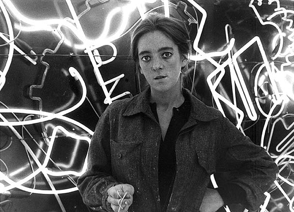

OBRA 01 / 1965DOCUMENTADA
LA
MENESUNDA
Realizada con Rubén Santantonín, fue una ambientación laberíntica que invitaba al público a atravesar situaciones y estímulos diversos. Su sentido no estaba en una imagen única, sino en el recorrido de cada visitante.
Lo que queda: fotografías, filmaciones y una reconstrucción posterior en el Museo de Arte Moderno de Buenos Aires.